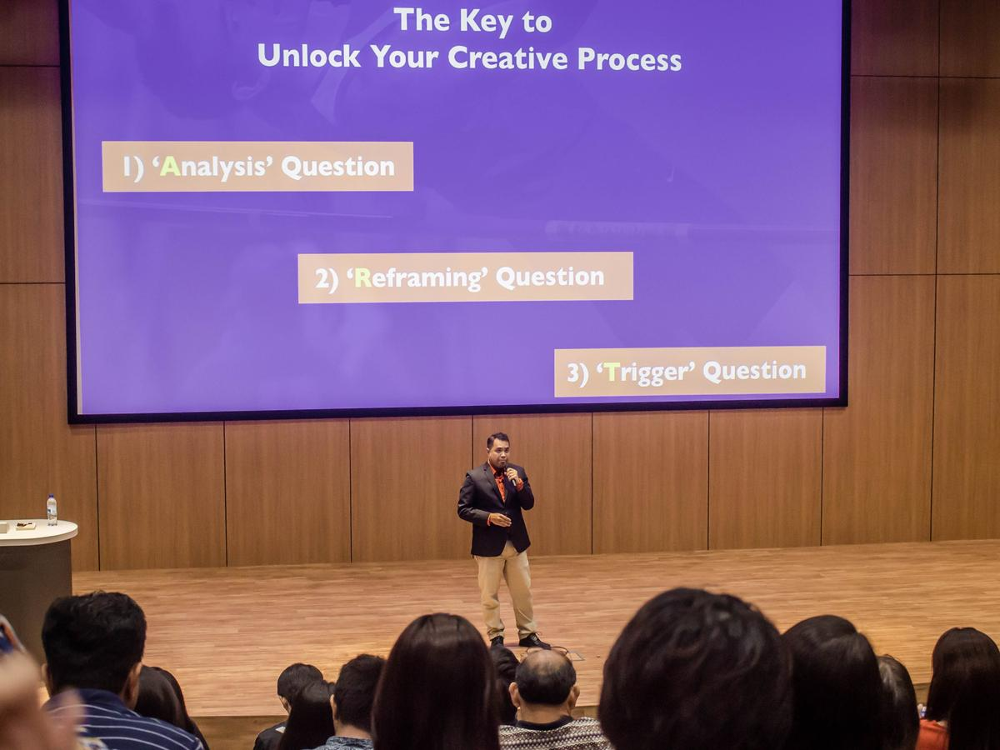

FROM STAGE TO WORKPLACE
Meet Hazriq IdrusCreative Leadership StrategistFounder, The Speaking Factory Pte Ltd

AUTHOR · SPEAKER · STAGE ACTOR
Hazriq Idrus
As a young student, Hazriq once froze on stage during a school quiz competition. Instead of staying away from the stage, he eventually found his way back through acting. That journey took him from theatre stages across Singapore to boardrooms and conference halls across Asia.
Along the way, he discovered something: what performers learn on stage can help people perform better at work.
Stagecraft meets workplace craft.
Today, Hazriq brings together stagecraft and workplace craft to help professionals communicate, collaborate and respond more effectively when the moment doesn't go according to plan. He has worked with organisations including BMW Asia, PRefChem, StarHub and the Singapore Turf Club, and has reached more than 5,000 learners through speaking, training and education.